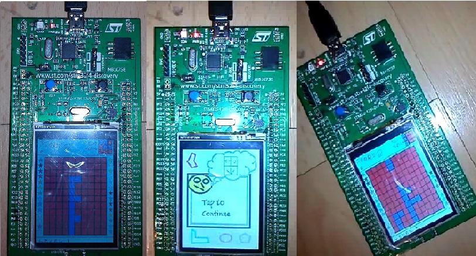

Micro Framework Tetris
Introduction
Tetris game developed using C# and .NET Micro Framework port for STM32F429 discovery board. The poprose of this application is to show capabilities of NETMF with graphical displays.
Building the Sample
For building the sample STM32F429 discovery board is required. It is highly avaliable in most countries at average cost below 30$. It is also possible to run application on other .NET Micro Framewotk devices, by changing setting class but be aware: game use fixed sized bitmaps so that it is decicated for 240x320 screens.
Sample was compiled using Visual Studio 2012 and .NET Micro Framework version 4.3.
Application uses .NET Micro Framework port avaliable at ST site(check links below). Instructions how to install the port on the board are also avaliable on this site.
Description
Application is simple tetris game written on STM32F4 processor using C#. Is uses only peripherals avaliable on discovery board, no external components are needed. Sample screen from the working application are provided below:

Game Controlls
During game initialization and after finishing the game: just tap the screen to move to the next game state.
During the game:
Screen is divided fot three sectors:

- Tapping on sector 3 makes brick rapidly fall to the end of the screen
- Tapping sector 1 or 2 while board user button released makes brick move left-or-right
- Tapping sector 1 or 2 while board user button pressed makes brick rotate left-or-right
Source Code Files
Folders:
- Game - Gamplay objects like brick, game board ...
- Helpers - Helper classes
- Presentation - Presentaion objects including main window
- Resources - Classes managing resources
Also, there are many comments in source code.